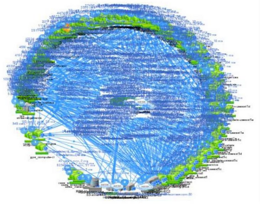

[comment]: # (mdslides presentation.md --include media) [comment]: # (The list of themes is at https://revealjs.com/themes/) [comment]: # (The list of code themes is at https://highlightjs.org/) [comment]: # (markdown: { smartypants: true }) <style type="text/css"> .reveal { font-size: 2.2em; } .reveal .code-wrapper code { white-space: pre; font-size: 2em; line-height: 1.2em; } </style> __REPO_NAME__ # Introduction to Microservices By Alon Itach  Resources by: martinfowler.com
### Today's agenda - Monolithic applicatoin - What exactly are Microservices!? - When should we consider using these techniques? - Microservice characteristics
## A monolithic application A monolith application is a type of software where all components and functionalities are tightly integrated into a single codebase and deployed as a single unit. 
## A monolithic application The problems: - A change made to a small part of the application, requires the entire monolith to be rebuilt and deployed. - Overtime it's often hard to keep a good modular structure. - Scaling requires scaling of the entire application rather than parts of it that require greater resource 
## A monolithic application Some benefits: - Monolith can sometimes make deployment simpler. 
## Microservices - The basic idea  In short, the microservice architectural style is an approach to developing a single application as a **suite of small services**
## Microservices - The basic idea  Each microservice running in **its own process (container)** and communicating with lightweight mechanisms, often an HTTP resource API
## Microservices - The basic idea  These services are built around **business capabilities** and **independently deployable** by **fully automated** deployment machinery (CI/CD pipeline)
## Microservices - The basic idea  There is a **minimum of centralized management** of these services
## Microservices - The basic idea  Services may be written in different programming languages and use different data storage technologies
## Microservices: ~~The definition~~ Common characteristics - Componentization via Services - Organized around Business Capabilities - Products not Projects - Decentralized Governance - Decentralized Data Management - Infrastructure Automation - Design for failure
## Microservices: Common characteristics - **Componentization via Services** - Organized around Business Capabilities - Products not Projects - Decentralized Governance - Decentralized Data Management - Infrastructure Automation - Design for failure
## Componentization via Services - Component is a unit of software that is independently replaceable and upgradeable. - In microservices, the primary way of componentizing a software is by breaking down into services. 
## Componentization via Services - Components communicate with a mechanism such as a web service request - Componentizing a software into services enforce more explicit interface between components. 
## Microservices: Common characteristics - Componentization via Services - **Organized around Business Capabilities** - Products not Projects - Decentralized Governance - Decentralized Data Management - Infrastructure Automation - Design for failure
## Organized around Business Capabilities - Organizations tends to organize themselves around technology - UI teams, server-side logic teams, and database teams. - That way, even simple changes can lead to a cross-team project taking many time and expensive budget. 
## Organized around Business Capabilities - The microservice approach splitting up into services organized around business capability. - Business-capability centric teams are “think-it, build-it and run-it, maintain-it” teams. - Consequently, the teams are cross-functional, including the full range of skills required for the development: user-experience, database, and project management. - Do not hand over to other teams for testing, deploying or supporting what they build. 
## Microservices: Common characteristics - Componentization via Services - Organized around Business Capabilities - **Products not Projects** - Decentralized Governance - Decentralized Data Management - Infrastructure Automation - Design for failure
## Products not Projects - In projects, the aim is to deliver some piece of software which is then considered to be completed. - On completion the software is handed over to a maintenance organization and the project team that built it is disbanded. - Microservice preferring instead the notion that a team should **own a product over its full lifetime**. - The development team takes full responsibility for the software in production. - There's no reason why this same approach can't be taken with monolithic applications, but the smaller granularity of services can make it easier to create the personal relationships between service developers and their users.
## Microservicesd: Common characteristics - Componentization via Services - Organized around Business Capabilities - Products not Projects - **Decentralized Governance** - Decentralized Data Management - Infrastructure Automation - Design for failure
## Decentralized Governance - Centralised governance has the tendency to standardise on single technology - single programing language, single DB platform, etc... - Splitting the monolith's components out into services we have a full choice when building each of them. - You want to use Node.js to standup a simple reports page? Go for it. C++ for a particularly gnarly near-real-time component? Fine.
## Microservicesd: Common characteristics - Componentization via Services - Organized around Business Capabilities - Products not Projects - Decentralized Governance - **Decentralized Data Management** - Infrastructure Automation - Design for failure
## Decentralized Data Management - Monolithic applications prefer a single logical database for persistant data. - Data modeling in a centralized world can lead to conflicts. Sales view of a customer data will differ from the support view of the same data. - Microservices prefer letting each service manage its own database, either different instances of the same database technology, or entirely different database systems. - This decentralized approach can lead to eventual consistency and synchronization problems. 
## Microservicesd: Common characteristics - Componentization via Services - Organized around Business Capabilities - Products not Projects - Decentralized Governance - Decentralized Data Management - **Infrastructure Automation** - Design for failure
## Infrastructure Automation - Microservices are built and deployed by Continuous Integration and Continuous Delivery (CI/CD) techniques. - Services are fully built, tested and deployed. The delivery process can be done as frequent as many times a **day**. 
## Microservicesd: Common characteristics - Componentization via Services - Organized around Business Capabilities - Products not Projects - Decentralized Governance - Decentralized Data Management - Infrastructure Automation - **Design for failure**
## Design for failure - Applications need to be designed so that they can tolerate the failure of services. - You **must** assume that any service call could fail due to unavailability of the supplier, the client has to respond to this as gracefully as possible. - Netflix's [Chaos Monkey](https://github.com/Netflix/chaosmonkey) induces failures of services and even datacenters during the working day to test both the application's resilience and monitoring. - Microservice applications put a lot of emphasis on real-time monitoring of the application, checking both architectural elements (how many requests per second is the database getting) and business relevant metrics (such as how many orders per minute are received). 
## Common issues in Microservices - Complex, and difficult to understand and troubleshoot - Potentially inefficient - Some operations might need to be implemented using complex, eventually consistent transaction management since loose coupling requires each service to have its own database.
## Common issues in Microservices Common patterns in the Microservice architecture can address different issues 
# Thanks